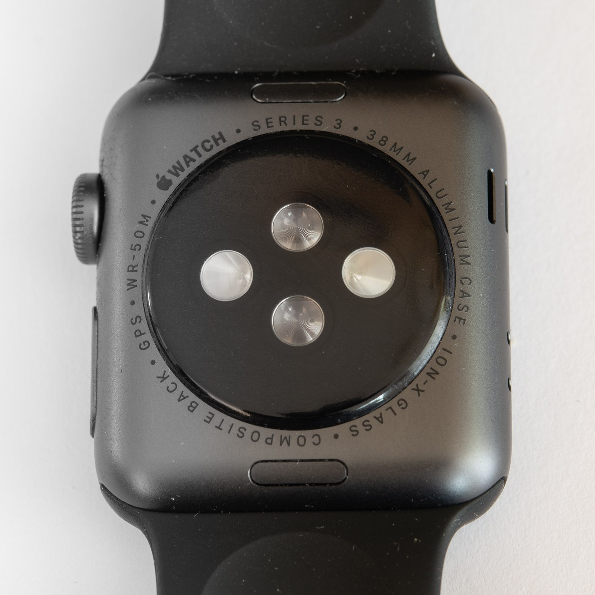

The Autopsy Report · Device #054
Apple Watch Series 3
The watch that cut the phone cord. Apple hid a cellular radio, an eSIM, and a secret six-pin diagnostic port inside a case barely bigger than its predecessor.
What is this thing?
The Apple Watch Series 3 is Apple's 2017 smartwatch — the first Apple Watch with an optional cellular connection, so it could take calls and stream without an iPhone nearby. The U.S. cellular models are A1860 (38 mm) and A1861 (42 mm). It runs on a dual-core processor with Apple's W2 wireless chip, and in a neat trick, the display itself doubles as the cellular antenna. An eSIM — no physical SIM tray — holds the carrier subscription. TechCrunch
Not yet on our bench
Straightforward honesty first: BareBoard has not possessed, disassembled, tested, booted, or touched the firmware of this unit. We don't have one on the bench yet. Everything below is built from public records — FCC filings, manufacturer material, datasheets, manuals, and published teardowns — with every claim linked to its source and graded for confidence. When a fact genuinely requires our hands on hardware (boot logs, our own photos, exact board revision of a future unit), we say so out loud.
That framing is what makes publishing now legitimate: this is a public-records autopsy, and it will grow into a bench autopsy the day a unit lands on our desk.
A short history
- September 12, 2017Apple announces the Watch Series 3 with built-in cellular. TechCrunch · FCC application record
- September 15, 2017Orders open. SlashGear
- September 22, 2017The watch goes on sale. SlashGear
- September 25, 2017iFixit's teardown: an LTE RF section, an STMicroelectronics part believed to be the eSIM, the W2 wireless chip, a slightly bigger 1.07 Wh battery, and a repairability score of 6 out of 10. AppleInsider · HotHardware
The outside
Same general size as the Series 2 — the cellular models are distinguished by a red dot on the Digital Crown. The case back is ceramic with the optical heart sensor array in the middle. TechCrunch

The board
The Series 3 is built around Apple's S3 system-in-package, with the cellular hardware as the headline addition: an LTE RF section and an STMicroelectronics part the teardown team believes is the eSIM. Apple's W2 chip handles Wi-Fi and Bluetooth. A 1.07 Wh battery — slightly larger than the Series 2's — fills much of the remaining space. iFixit scored it 6/10 for repairability: the screen comes off without destroying the watch, but the tiny battery and glued bits still fight you. AppleInsider · HotHardware
One honest gap: the FCC filing we could reach shows test-setup photos and user manuals, but no internal-photo exhibit — so the board description above rests on the public teardown, not on regulator photos. FCC exhibit index
Under the microscope: the chips
What's inside, what each part does, and how sure we are. Confirmed means a primary source. Likely means well-corroborated public records. Apple publishes no datasheets for the S3 or W2.
| Chip | What it does | How we know | Dig deeper |
|---|---|---|---|
| Apple S3 system-in-package |
The main computer: dual-core processor plus supporting logic in one package. TechCrunch | Likely Named in Apple's product material and confirmed present by the teardown. AppleInsider | No public datasheet was found — Apple does not publish datasheets for the S3. |
| Apple W2 | Wi-Fi and Bluetooth wireless. TechCrunch | Likely Identified in the teardown. AppleInsider | No public datasheet was found. |
| STMicroelectronics part (believed to be the eSIM) | Holds the carrier subscription electronically — no SIM tray. TechCrunch | Likely The teardown team's identification, kept in their wording. AppleInsider | Exact part number not identified in public records. |
| Battery 1.07 Wh |
Power. | Likely Reported by the teardown. AppleInsider | — |
The government's file on this device
The FCC record for BCG-A1860 (Apple Inc.) carries an application date of September 12, 2017 — launch day. The exhibits we could verify include test-setup photographs and user manuals. We found no internal-photo exhibit in the reachable record, so the FCC's own view of the insides isn't public here. FCC test-setup photos · FCC user manual
Debug & service modes
Our posture: we listen, we don't knock. Only publicly verified interfaces.
The hidden six-pin diagnostic port. Under the band-release slot sits a small six-pin port Apple never officially acknowledged. It was designed for Apple's internal use — diagnostics and software flashing — and third parties later demonstrated it could also carry charging current. Apple removed the port starting with the Series 7. We document its public existence only: no pinout, no access procedure, no bypass. iDownloadBlog
User-facing service: unpairing, erase, and restore are handled through the Watch app on the paired iPhone — ordinary, documented, user-level operations.
What the public record says
Cellular without a bigger watch. The engineering story of the Series 3 is miniaturization: LTE, eSIM, and a display-as-antenna squeezed into essentially the Series 2's footprint. TechCrunch
Fixable, with patience. The 6/10 repairability score makes it one of the more repairable Apple wearables of its era — the display is removable without heat-gun heroics — though the battery remains fiddly. AppleInsider
What we didn't do
- We have not possessed, disassembled, tested, or booted this device.
- We have not extracted, modified, shared, or reverse-engineered its firmware.
- We document only publicly verified interfaces and user-facing modes — read-only, no lock bypass, no authentication defeat, no credential or key material.
- Anything below marked as unknown stays unknown until the bench says otherwise.
By the numbers
- Models: A1860 (38 mm) / A1861 (42 mm) — U.S. cellular
- FCC ID: BCG-A1860 (no internal-photo exhibit found in the reachable record)
- Chips: Apple S3 SiP · Apple W2 · STMicroelectronics eSIM part (teardown's belief)
- Battery: 1.07 Wh (teardown-reported)
- Announced: September 12, 2017 · on sale September 22, 2017
- Repairability: 6/10 (iFixit)
Words to know
Every term this page uses, in plain English. No prior knowledge required.
- eSIM
- A carrier subscription stored on a chip instead of a removable plastic SIM card.
- System-in-package (SiP)
- Several chips stacked into one module — Apple's way of shrinking a computer into a watch.
- LTE
- The 4G cellular standard — what lets the watch call and stream without the phone.
- Diagnostic port
- A hidden connector manufacturers use for testing and repair. Apple's was six pins, under the band slot.
- FCC ID
- The ID the FCC assigns to each approved wireless product. Punch it into fccid.io and the whole public filing comes up.
Sources & confidence
- FCC record BCG-A1860 (application September 12 2017, test-setup photos, user manuals, no internal-photo exhibit found): primary source — Confirmed.
- Dual-core processor, W2, display-as-antenna, eSIM, same size as Series 2: Apple product claims via TechCrunch — Likely.
- LTE RF section, ST eSIM part, W2, 1.07 Wh battery, 6/10 repairability: iFixit teardown via AppleInsider/HotHardware — Likely.
- Orders September 15 / launch September 22, 2017: SlashGear — Likely.
- Six-pin diagnostic port (internal use, unacknowledged, removed in Series 7): iDownloadBlog — Likely.
- Anything not listed here is unknown until the bench says otherwise. We'll say so, out loud, when that's the case.
Serial numbers and QR codes are blacked out of every published photo. Raw originals stay private.
Legal note. BareBoard is an educational project. Everything on this page comes from public records — FCC filings, manufacturer material, datasheets, and published teardowns — plus our own analysis of those records. We don't publish, host, or distribute firmware, keys, passwords, or credentials. Product names and trademarks belong to their respective owners and appear here only to identify the hardware. If you believe anything here infringes your rights, contact us and we'll address it promptly.